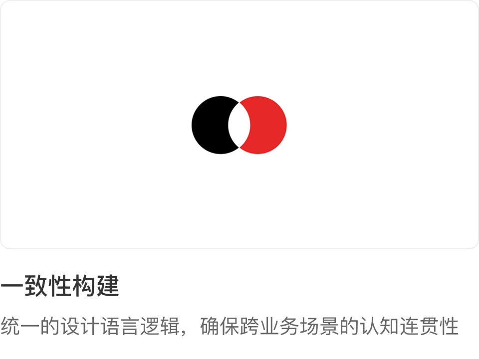
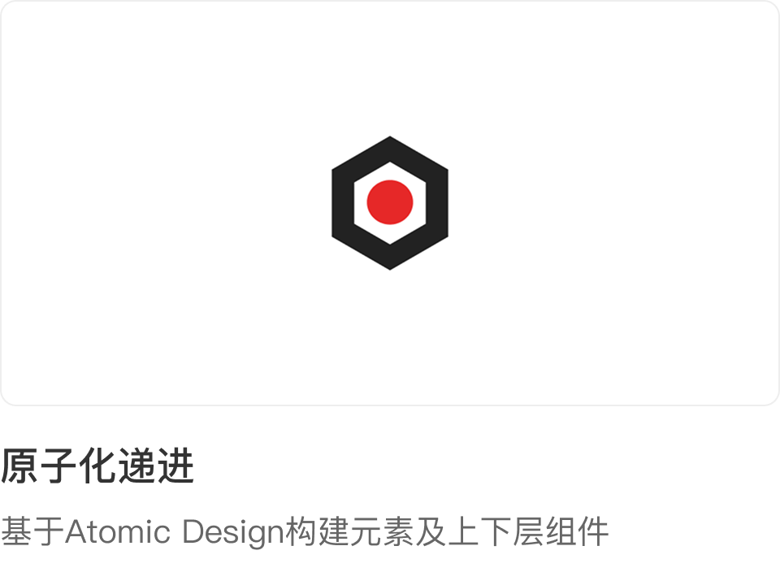
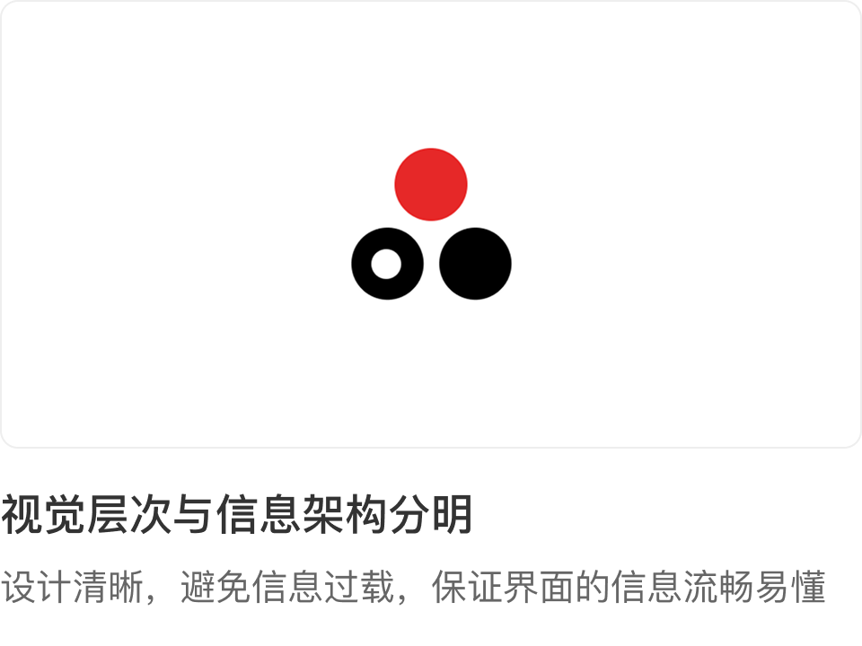
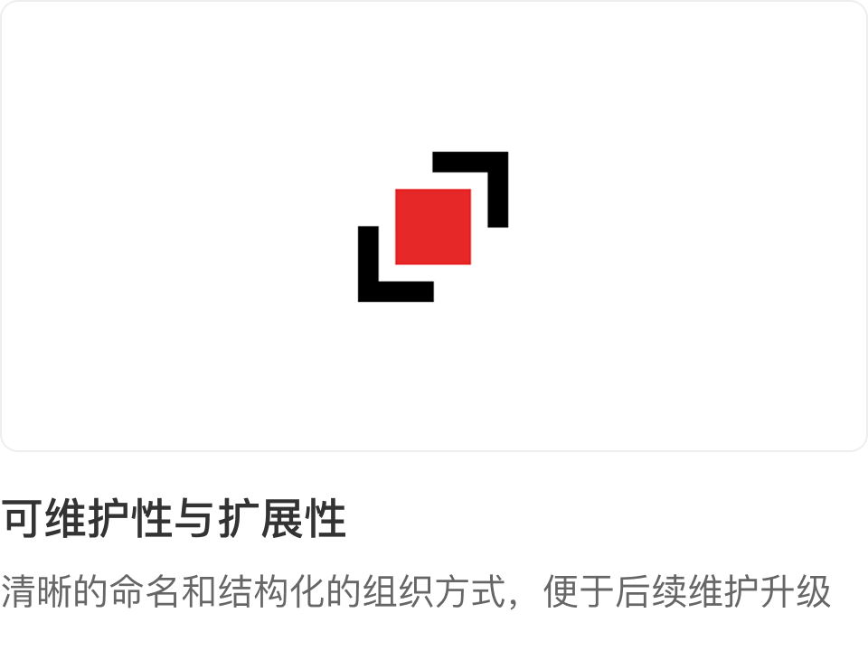
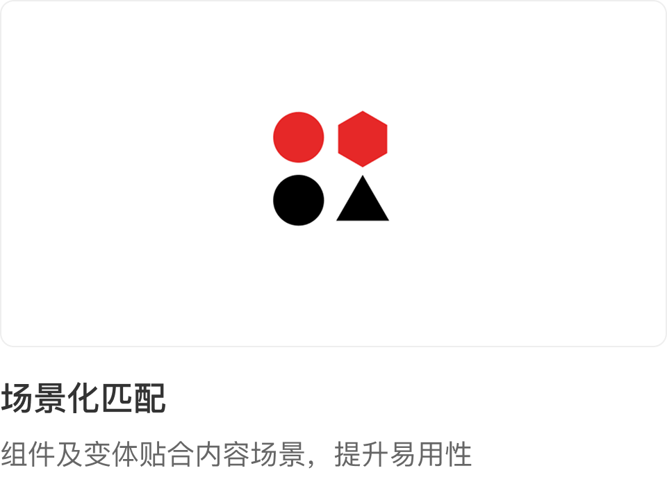
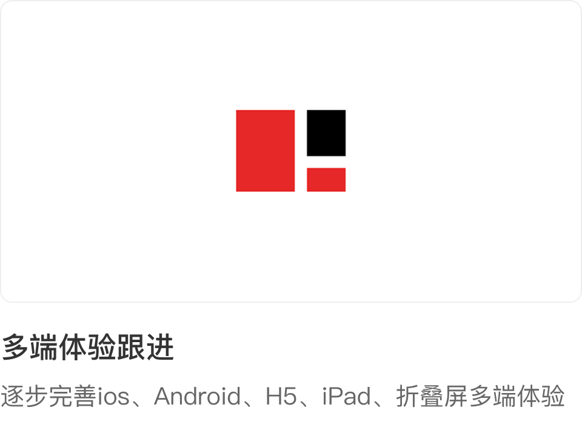

强调减速缓动
以峰值速度开始，然后缓慢地停止，通常用于进入屏幕的效果
从 DaMo Design System 的介绍页整理而来，包含设计原理、动效和图标三个部分。 页面保留设计稿的信息结构，并转换成当前文档站的静态 HTML 风格。
DaMo组件库包含了用于创建应用的UI组件、模板、实例和其他资源。DaMo设计体系深度承载「值得买」服务核心理念，作为设计规范的核心，它有助于将值得买的业务与计语言统一对齐。请参考这些原则来指导你的设计。
设计原理是指导设计过程中决策和操作的一系列基本原则和规则，它们帮助设计师在视觉、功能、体验等方面做出合适的选择，从而确保设计的有效性和美感。设计原理不仅涉及视觉元素的搭配，还涵盖了用户体验、交互、可访问性等多个方面。






在设计产品时，我们必须从用户的角度考虑所有可能性。确保无论是色盲、视力问题等个人限制，还是慢速网络连接等环境限制，都能平等地访问信息并获得相应的利益。
考虑到显示屏阅读距离（50厘米）和最佳阅读角度（0.3），我们将基础字体大小定为14，以确保在大多数常见显示器上提供最佳的用户阅读效率。

我们推荐的基础字体大小为14，对应的行高为21。我们根据使用场景定义了1.2x、1.5x、1.66x、1.8x的行高倍数，根据具体情况自由定义。建议在设计系统中（展示页面除外），字体比例的选择应控制在3到5种之间，并保持适度的约束原则。

大文本的对比度比率应至少为3.0:1，小文本的对比度比率应至少为4.5:1。对于装饰性图片和非活动状态，没有标准的对比度比率。
颜色对比网站：https://contrast-ratio.com/

定义能准确点击的最小点击区域：44 * 44px。小于这个范围点击不灵敏，体验较差。对于比这个范围小的可点击按钮，周围需要用透明区域填充后再输出切图。

动效设计是提升用户体验、增强界面趣味性和引导用户操作的重要手段
| 缓动 | 持续时间 | 过渡类型 |
|---|---|---|
| 强调 | 500ms | 在屏幕上开始和结束 |
| 强调减速 | 400ms | 进入屏幕 |
| 强调加速 | 200ms | 退出屏幕 |
| 标准 | 300ms | 在屏幕上开始和结束 |
| 标准减速 | 250ms | 进入屏幕 |
| 标准加速 | 200ms | 退出屏幕 |
在物理世界中，物体不会瞬间开始或停止。相反，它们需要时间来加速和减速。没有缓和的过渡看起来僵硬而机械，而有缓和的过渡看起来更自然 缓动类型的选择基于屏幕上的移动关系。强调缓动推荐用于大多数过渡效果。标准缓动可以用于需要快速的小型实用过渡效果。
以峰值速度开始，然后缓慢地停止，通常用于进入屏幕的效果

从静止开始，以峰值速度结束，通常用于退出屏幕的效果
过渡的持续时间应避免过长或过短，以免让用户感觉在等待。合适的持续时间与缓动结合能够创造平滑且响应迅速的过渡效果
覆盖小区域的过渡持续时间较短，而覆盖大区域的过渡则持续时间较长。随着过渡区域的增大或缩小，持续时间的变化需保持一致的速度感。
退出、关闭或折叠元素的过渡应使用较短的持续时间，因为它们需要较少的用户关注，转换速度较快。而进入屏幕或保持不变的过渡则应使用更长的持续时间，以帮助用户将注意力集中在屏幕上的新内容上。
精心设计的转场动画应具有以下特征：
大多数平台都设有简化的动画设置，以帮助对动作敏感的用户
持续应用正确的过渡类型有助于让应用程序感觉具有凝聚力并且使用起来可预测
UI 元素在转换过程中保持连贯和稳定。避免内容在加载时移动位置或立即弹出。这可能会分散注意力并让人感到沮丧。
跳切通常应避免作为默认设置，因为它们可能会让人感到困惑。从一个屏幕立即转换到另一个屏幕不会给用户提供任何线索来帮助他们自己定位
过渡用于建立连贯的空间模型。这有助于用户了解应用程序的物理布局
过渡应具有统一的移动方向。元素被分组并沿着主轴移动，而不是朝独立的方向移动。只有像英雄图像这样的重要元素在整个过渡过程中保持不变。这有助于引导用户的注意力。
在淡入新内容之前完全淡出内容。这避免了部分透明元素的重叠而导致分散注意力和混乱的框架。 如果需要发生交叉淡入淡出，请保持快速并在过渡最快的部分将其隐藏。
过渡效果不适用于高度风格化的动作
图标在界面中起着重要的导航、提示和交互作用，使用户能够轻松地执行特定的操作或访问相关功能。图标需要直观传达其功能含义，确保用户能够迅速识别并理解界面中的操作选项，从而提升交互体验和使用效率
根据Material Design icon规范优化而来，保证视觉大小一致。 内容应该保持在活动区域以内，如有必要，根据视觉效果，内容可以延展至安全区域之中，但不能超出。